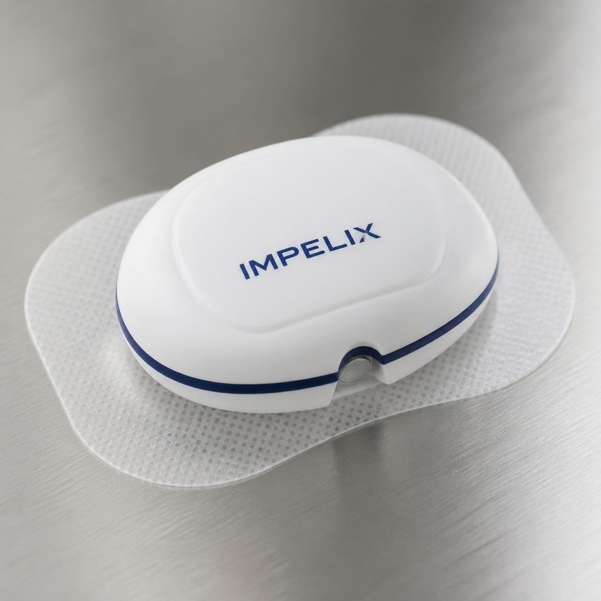

The approach
Impelix is a remote patient monitoring platform. The sensing method is ours; the value is in the service around it.
What the platform is
A wearable sensor worn at the ankle takes a daily measurement using segmental bioimpedance spectroscopy, a non-invasive technique that estimates extracellular fluid in a limb segment from its electrical properties. The measurement is transmitted to a clinician dashboard, where it is tracked against the patient's own baseline rather than against a population norm. When a patient's trajectory deviates, the platform surfaces it for review by the care team.
The platform does not diagnose and does not recommend treatment. Clinical decisions remain with the clinician.
The device is investigational. It has not been licensed by Health Canada or cleared by the FDA, it is not for sale, and no claim of clinical performance is made. Our first-in-patient feasibility study is described on the evidence page.

How it is delivered
Hardware is provided as part of a service, not sold as capital equipment. Practices pay a monthly fee per monitored patient, and the monitoring itself is billable under existing remote physiologic monitoring codes. A nurse-led workflow, with protocolized triage and physician supervision, lets one nurse follow a cohort of high-risk patients that would otherwise generate unscheduled calls and visits.
Our practice-level model indicates this is accretive to a specialist practice under current fee-for-service rules. That is a model, not a result; we will report what practices actually experience once the platform is in use.
Regulatory path
We are pursuing a Health Canada Class II Medical Device Licence and U.S. FDA 510(k) clearance in parallel, and have operated an ISO 13485-aligned quality management system from incorporation. The dual track is deliberate: the United States is our first commercial market, and we do not intend to treat it as an afterthought.